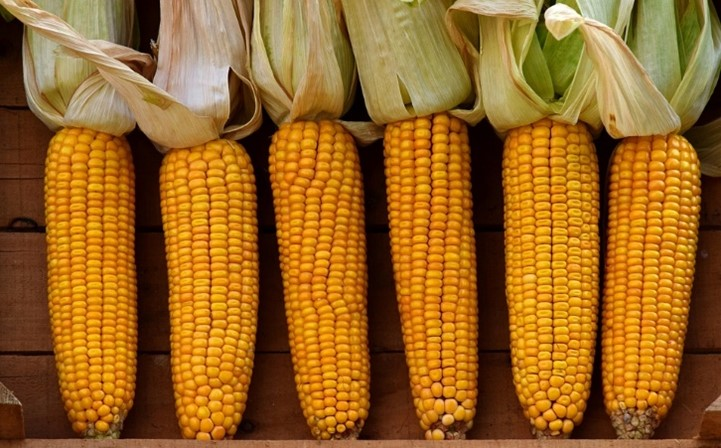

Have you ever eaten corn on the cob? If you have, you were eating sweet corn! It is picked while it’s not fully grown so that this way it’s higher in sugar, making it taste sweet! This is the kind of corn we find at the grocery store or farmer’s markets.
